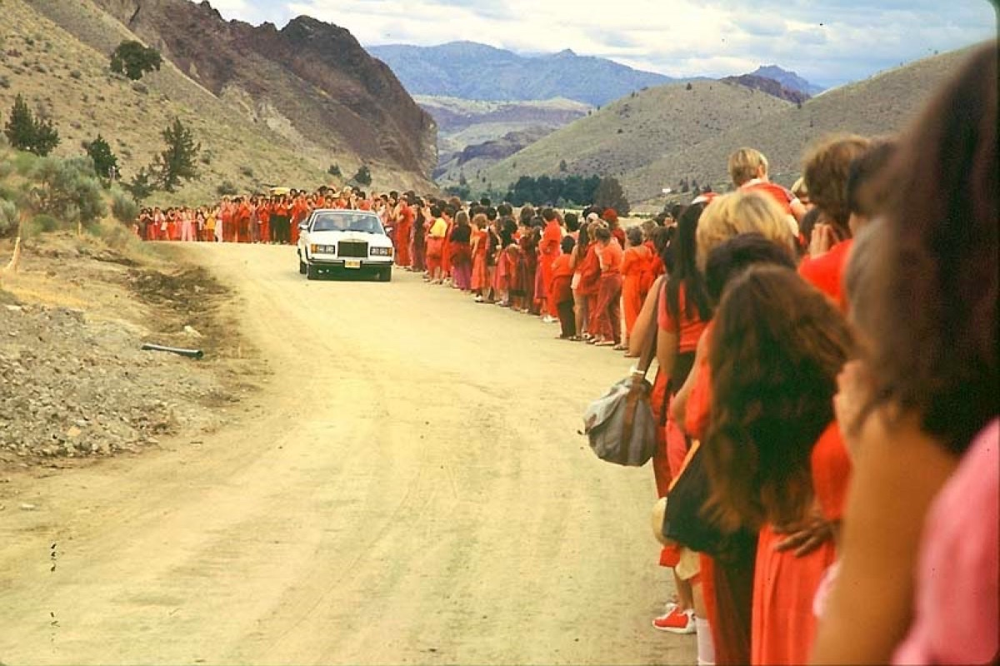

Nobody joins a cult
When the Peoples Temple started, in 1950s Indiana, it was one of the only churches that would seat black and white families in the same pew. It ran soup kitchens and drug clinics. Members called it the most loving place they had ever been. Twenty years later, 918 of them lay dead in a jungle.
That distance, between the church people fell in love with and the grave it became, is the subject here. Nobody signs up for a cage. They sign up for a path: a way to be good, to belong, to matter, to wake up. The cage gets built later, one reasonable step at a time, usually by people who would have laughed if you had told them on day one where it ended.
This is a case study, not a tour of strange beliefs to gawk at. The strange beliefs are the least useful part. What matters is the machine, because it is nearly the same machine every time. A short list of tools turns a community into a trap, and the list barely changes whether the group is selling meditation, business coaching, or a ride on a spaceship. Learn the tools and the mystery drains out of the story. You stop asking how anyone could fall for it, and start seeing the steps.
So this maps the machine first, the handful of controls that do the converting, and then runs five real groups through it: Scientology, the self-help company NXIVM, Rajneesh's commune in Oregon, Jonestown, and Heaven's Gate. One machine, five endings, from a tax-exempt church still operating today to thirty-nine people dead in matching sneakers.
How the cage closes
A cult is not built in a day, and it is mostly not built by force. It is built by a sequence, and the sequence is gentle at the start on purpose.
It opens with love. The first thing a high-control group hands you is not a doctrine, it is a feeling: of being seen, wanted, and finally home. New people get flooded with warmth, attention, and instant friendship, a tactic members of the 1970s Unification Church, the Moonies, named love bombing. Nobody gets argued into a cult. They get loved into one, and the love is often genuine, which is exactly what makes it work.
Then the world narrows. Bit by bit, more of your time, money, and friendship runs through the group, until it is the main thing in your life and the people in it are your only real relationships. The group shapes what you read and who you trust, and it gives ordinary words private meanings, so that after a while you can only really talk, and then only really think, in its terms. At the center sits one person, or one small circle, who is the single source of truth. The leader is not first among equals. The leader is the only door to whatever you came for.
Then it tightens. You are never quite pure enough, so there is always more to fix, more to confess, more to give. The private failings you hand over in good faith become a record the group can hold. And the asks escalate so slowly that no single step feels like the line: a weekend, then a course, then your savings, then your marriage. Each step is only a little past the last one, and you already paid for the last one.
By the time leaving crosses your mind, leaving costs everything. Your friends, your job, your husband or wife, your sense of who you are, and the years you already sank, are all inside the group. Some groups make the exit cost explicit, by shunning anyone who goes or holding a secret over them. Most never have to. The exit has simply been priced out of reach. That pricing is the cage. The doors usually stand open. It is just that walking out now means losing your whole world.
No stage feels like a trap from inside it. Each one is a small, reasonable step past the last, which is the whole trick.
The same four stages fit a meditation commune, a business seminar, and a doomsday church. Only the doctrine in the middle changes.
The parts list
Two people put names to all of this. In 1961 the psychiatrist Robert Jay Lifton, after studying how Chinese prison camps had "re-educated" their captives, listed eight things that every total environment does to remake a person. It is still the closest thing the field has to a parts list. Lifton 1961
Lifton's eight, in plain terms
Milieu control
The group controls what you see, read, and hear, and who you talk to. The outside world gets harder to reach.
Mystical manipulation
Staged "spontaneous" events and coincidences, arranged to look like proof of the leader's special power or destiny.
The demand for purity
A perfect, impossible standard. You always fall short, so you always owe the group more effort and guilt.
The cult of confession
You are pushed to confess your sins and doubts. Those confessions become a record that can be used on you later.
Sacred science
The doctrine is treated as total and beyond question, both holy and "scientific." To doubt it is to be broken, not to disagree.
Loading the language
Insider words and thought-stopping cliches that end a hard thought before it starts. The jargon does the thinking for you.
Doctrine over person
When the teaching and your own experience collide, the teaching wins. You learn to distrust what you plainly saw or felt.
The dispensing of existence
The group decides who has the right to exist or matter. Insiders are real and saved, outsiders are lost, fallen, or doomed.
Decades later Steven Hassan, who was recruited into the Moonies as a college student and pulled out after a car crash, boiled the same idea down to the four things a controlling group works to govern. He calls it the BITE model, and the letters are the four levers. Hassan, BITE
B, behavior
Where you live, who you see, what you eat, how you spend your hours. Time and the body get booked solid, leaving no slack.
I, information
Outside news and critics are cut off or branded as poison. The group becomes your only trusted source about the world, and about itself.
T, thought
Certain thoughts are off limits, and a stock phrase is on hand to shut each one down before it goes anywhere.
E, emotion
Guilt, fear, and the dread of being cast out are kept turned up, so that staying feels like safety and leaving feels like death.
Five groups, one machine
Here are five real groups, each mapped on the same five axes: what it promised, who ran it, how the cage closed, what leaving cost, and how it ended. Tap any one, and watch the same machine run to five different endings.
They are sorted roughly from the most businesslike to the most deadly. The first two are still, on paper, self-improvement. The last two ended in mass death. The unsettling thing is how little the parts in between actually differ.
A demanding path, or a cage?
Here is the honest problem. Almost everything on Lifton's list shows up, in mild form, in things we admire: boot camp, a hard religious order, a startup that eats your twenties. So where is the line?
A few differences do most of the work. A healthy demanding group will let you leave, lets you ask questions without punishing you, tells you honestly up front what it is and what it wants, and serves some goal beyond itself. A cage hides what it really wants until you are in too deep to walk, treats doubt as betrayal, and exists mostly to feed the person at the top.
The sharpest single test is the cost of leaving. If walking away is allowed and survivable, you are in a community, even a strict and strange one. If the group has quietly arranged things so that leaving means losing your family, your money, your secrets, or your whole sense of self, you are in a cage, whatever the sign on the door says. Demanding is fine. Inescapable is the problem.
About the word "brainwashing"
That word deserves care, because the science under it is thinner than the movies suggest. In 1987 the American Psychological Association declined to endorse a report on "coercive persuasion" by the anti-cult psychologist Margaret Singer, saying it lacked "the scientific rigor and evenhanded critical approach" the subject needed. APA, 1987 contested Sociologists who actually sat in on these groups, like Eileen Barker, found that most people who attend a recruitment weekend never join, and most who do join leave on their own within a couple of years.
Nobody has a ray that rewrites a brain. What these groups have is more ordinary, and more believable: love, isolation, exhaustion, sunk cost, and fear, applied patiently to a normal person who happened to be lonely or in transition. That is scarier than brainwashing, not less, because it does not require the target to be weak or stupid. It only requires them to be human, and to be caught at the wrong moment. Which is to say it could include you.
Cult members are gullible fools. They "drink the Kool-Aid," and the rest of us would have known better and walked out.
At Jonestown it was Flavor Aid, and that small error sits inside a much larger one. Of the 918 who died, 304 were children, poisoned by adults; many grown members were injected or held at gunpoint. The phrase turns a mass murder into a punchline and blames the dead for being human. The people in these groups are, on average, no more foolish than you. That is the uncomfortable part, and the reason it is worth knowing the machine.
How to spot it early
You will not catch a cage by its beliefs, which can sound lovely. You catch it by its structure. A few honest warning signs, the kind that should make you slow down, not run, but slow down and look:
- Love that comes on too fast and too strong. Total acceptance from near-strangers, before they could possibly know you, is a technique as often as it is a feeling.
- A leader who cannot be questioned and who is the only road to the thing you want. Healthy teachers hand you tools and wave you off. A cage keeps you needing the gate.
- Us and them, with the outside world painted as sick, asleep, or doomed, and your old friends and family quietly recast as threats.
- The asks keep escalating, and your doubts are your fault. More time, more money, more obedience, and any hesitation is reframed as your weakness to fix.
- Leaving is made to cost too much. Your friendships, your job, your standing, or your secrets are arranged so the exit would take all of them down with it.
- The healthy version of all this lets you ask anything, leave any time with your life intact, and points at a goal outside the group. Demanding is fine. The exit is the test.
None of this is a reason to sneer at the people in the photograph at the top, lining a road in their red. They wanted what almost everyone wants: to belong to something good, and to be more than they were alone. That hunger is not a defect. It is the same hunger every decent church, team, and friendship feeds. The cult just answers it with a trap. Knowing the shape of the trap is how you keep a good path from quietly becoming a cage, your own or someone else's.
The doors of most cages stand open. The work is done earlier, in making the prisoner never want to leave, or never able to afford it.When a Path Becomes a Cage
Sources, and how to read them
This is a case study, not an expose, and not an endorsement of any group in it. The dead are treated as people, not punchlines. Every figure (918, 751, 304, 120 years) ties to an official record or the reporting cited where it appears, and where a group disputes an account, Scientology in particular, that is said in the body. Two claims are shakier than their fame: the strong form of "brainwashing," handled honestly above, is scientifically contested, and the famous Hubbard "start a religion" line, cited below but kept out of the story, is disputed.
The full list, 25 sources, grouped by topic
- The machine: how control works
- Lifton, Robert Jay (1961). Thought Reform and the Psychology of Totalism, ch. 22, the eight criteria. overview
- Lifton's eight criteria, applied as a checklist for thought reform. International Cultic Studies Association. cultrecover.com
- Hassan, Steven. The BITE model of authoritarian control (behavior, information, thought, emotion). Freedom of Mind. freedomofmind.com
- Hassan, Steven (1988). Combating Cult Mind Control (the author, a former Unification Church member). freedomofmind.com
- Singer, Margaret (1995). Cults in Our Midst, the "six conditions" for thought reform. on Singer
- Love bombing. Origin of the term among the Unification Church, and how it works in recruitment. overview
- The contested science (read the body honestly)
- APA (1987). The Board of Social and Ethical Responsibility rejected the DIMPAC report on "coercive persuasion" as lacking scientific rigor. on the task force
- Barker, Eileen (1984). The Making of a Moonie: Choice or Brainwashing? The field study that found most attendees never join. on Barker
- Scientology
- Wright, Lawrence (2013). Going Clear: Scientology, Hollywood, and the Prison of Belief (auditing, the OT levels, the Sea Org, disconnection). archive.org
- The Sea Org billion-year contract, confirmed in the church's own FAQ. Church of Scientology. scientology.org FAQ
- Disconnection and the "Suppressive Person" doctrine. overview
- L. Ron Hubbard, the "start a religion" line. Disputed attribution; conflicting affidavits, and a similar 1938 line from George Orwell. Wikiquote, with sources
- NXIVM
- US Department of Justice, EDNY (2020). "NXIVM Leader Keith Raniere Sentenced to 120 Years" (racketeering, sex trafficking, the branding, DOS and "collateral"). justice.gov
- Meier, Barry (2017). "Inside a Secretive Group Where Women Are Branded." The New York Times, the article that broke the story open. NXIVM overview
- Keith Raniere and Allison Mack's recruitment and 2021 sentence, background. overview
- Rajneesh, or Osho
- 1984 Rajneeshee bioterror attack. Salmonella in ten salad bars in The Dalles, Oregon; 751 sickened, none killed; still the largest such attack on US soil. overview
- Torok, T.J., et al. (1997). "A large community outbreak of salmonellosis caused by intentional contamination of restaurant salad bars." JAMA. PubMed
- The Rajneesh movement, Rajneeshpuram, Ma Anand Sheela, the Rolls-Royces, and the deportation. overview
- Jonestown / Peoples Temple
- Alternative Considerations of Jonestown, the primary-source archive. San Diego State University. jonestown.sdsu.edu
- Jonestown. The death toll of 918, of whom 304 were children, and the killing of Congressman Leo Ryan. Encyclopaedia Britannica. britannica.com
- It was Flavor Aid, not Kool-Aid, and most child deaths were homicides, not suicides. overview
- Heaven's Gate
- Heaven's Gate, the group's own website, online since 1997 and still maintained. heavensgate.com
- Heaven's Gate. The 39 deaths of March 1997, Hale-Bopp, and the "vehicle" theology. Encyclopaedia Britannica. britannica.com
- Zeller, Benjamin E. (2014). Heaven's Gate: America's UFO Religion (the scholarly account). overview
- The image
- Kossatz, Samvado Gunnar. "Osho Drive-by in Rajneeshpuram," summer 1982. The opening and card photograph, via Wikimedia Commons (CC, attribution). Commons
{kind=link}
The card and link image is a photograph by Samvado Gunnar Kossatz of Bhagwan Shree Rajneesh's daily drive-by at Rajneeshpuram, Oregon, summer 1982 (via Wikimedia Commons, Creative Commons attribution).